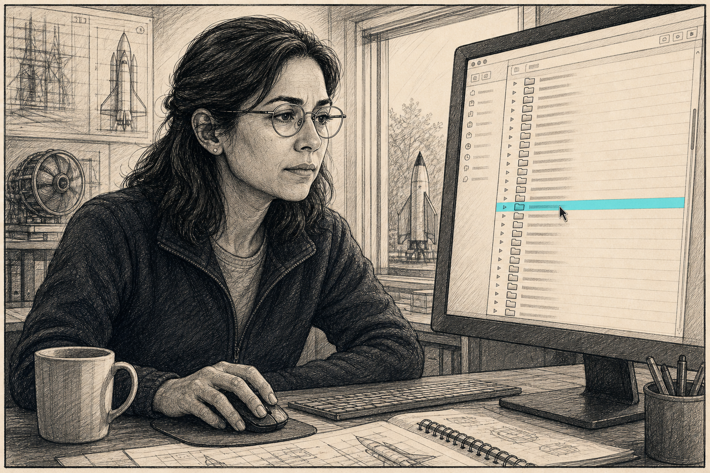
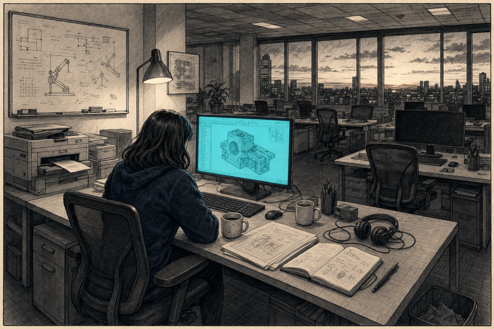

Data black market (preview)
Standalone preview file. The integration step lifts the
<div class="dbm-figure"> block plus the inline
<script> at the bottom into the article.
A program manager asks one question
Watch what happens on most teams.
A flat-file storage layer — CSVs, .png plots, scripts in folders, results in spreadsheets — gives you the illusion of connectivity. Same data is in there somewhere; the connections aren’t.
01 · Friday 14:18 · Slack
Sarah’s working through a stress check when the message lands. The hinge-moment plot in the design package is the one Marsh produced last November. Configuration’s changed twice since. Is the plot still valid?
02 · Last month’s design review
Sarah opens the deck. Slide 14, three-quarters of the way down, there’s the plot. It’s a PNG. No metadata. No link to a solver run, no line to the script that drew it, no hint of which mesh produced the underlying numbers. Just an image, dropped into a slide, surrounded by a caption a reviewer once nodded at.

03 · Cluster · ~/shared/aero/
So she goes hunting. The shared cluster volume opens onto a wall of subdirectories: wing-redesign/, wing-redesign-v2/, wing-redesign-v2-FINAL/, wing-redesign-v2-FINAL-marsh/, wing-redesign-v2-FINAL-2/, archive_dec/, do-not-use/. She opens four of them in tabs. Each one contains a different number of Python scripts and a different convention for naming them.

04 · compute_hinge_moments.py
She finds it. Forty-eight lines of Python, the kind that does the actual work. The header comment names the author and a date. T. Marsh, Technical Fellow. Last modified eight months ago, two months before he left. The git log on the file is six commits long, the latest unsigned, the comments terse. There is no README in the directory.

05 · Slack · @tmarsh
Sarah pivots to Slack to ping him — a quick hey, where did you point this script for the November DR? The avatar is greyed-out. User no longer in workspace. She tries Outlook. The mail bounces. There’s a forwarding note that says “please contact your account manager,” which she does not do.

06 · Line 8
Back to the script. Line 8: DATA_DIR = "/projects/wing-redesign/config_v2_old/". The pre-update geometry. Six months stale at the time the plot was made. Eight months stale now. The script is correct. It just isn’t reading what anyone in this conversation thinks it’s reading.

07 · The reckoning
Sarah sits back. The plot in the design package is honest about its numbers. The script that made it is honest about its inputs. The slide is honest about being a slide. Each artefact, alone, is fine. What’s missing is the connection from one to the next, which never lived in any of them — it lived in Marsh’s head, and walked out the door at six o’clock, eight months ago.


The data was always there. The connections walked out the door at six o’clock — eight months ago. — what most teams call “due diligence”
Same dataset throughout. The artefacts — .png, .xlsx, .csv, plot.py, the cluster directory tree — look connected. They’re not. The connections lived in someone’s head and walked out the door at six o’clock. Keep the connections, not just the artefacts, and that gap closes.